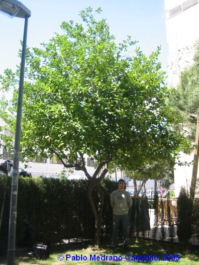
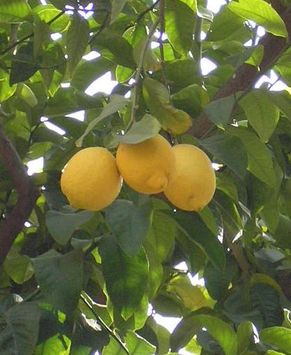

|
Citrus limon (L.) Burm.
f.,
Fl. Ind. 173 (1768)
C. medica var. limon L.; C. limonum
Risso
|
Rutáceas |
| Limonero | Árbol perennifolio |
|
Árbol perennifolio de 5,5 m de altura [hasta 7m (1)],
erecto y de copa irregular, con numerosas ramas erguidas,
las jóvenes con fuertes espinas duras y gruesas, de 0,6-4,5
cm, las viejas inermes o con espinas de menos de 1cm;
corteza lisa, de marrón a grisácea. Hojas simples, alternas, con pecíolo de 1 cm , a veces anchamente alado; lámina de 6-8 cm x 12-13 cm, oblongo-lanceolada, con borde aserrado-dentado, coriácea, de nervadura prominente y color verde que oscurece con el tiempo. Inflorescencias axilares, formadas por pequeños grupos de flores o reducidas a flores solitarias. (2) Flores hermafroditas, actinomorfas; cáliz con 5 lóbulos o dientes; corola con 5 pétalos libres, blancos o teñidos de púrpura, con glándula nectarífera en la base; numerosos estambres de filamentos libres o soldados en grupos de tres, con anteras amarillas; ovario súpero, plurilocular; estigma pegajoso. Fruto carnoso, de tipo hesperidio, de hasta 13 cm, oblongo u ovoide, amarillo, de piel gruesa y rugosa. Florece durante casi todo el año, pero principalmente de Abril a Mayo. |
 Ejemplar de la Facultad de Matemáticas. Foto: Pablo Medrano Campillo, 2005 |
|  Foto: Ana Mª Vilches Rembado, 2006 |
Observaciones:
El término
Citrus parece derivar del griego kitron,
traducido como "limón" por las fuentes consultadas. El
epíteto específico deriva del arabe laymun, y
fueron los árabes quienes lo introdujeron en la Península
Ibérica en el siglo X.
El limón produce un efecto tónico venoso, disminuyendo la permeabilidad capilar. Los bioflavonoides que contiene fortalecen las paredes interiores de los vasos sanguíneos, ayudando a aliviar varices y contusiones. Actúa como antiséptico y antibacteriano, muy útil en procesos gripales, resfriados, arteriosclerosis y otras afecciones. La principal utilización del limón es como aromatizante y corrector del sabor en alimentación. (3) |
| Área de origen.-
Noroeste de la India e Himalaya. Introducido en occidente
por los árabes |
|
| Uso en el campus: Un solo ejemplar en Matemáticas, se plantó en los años 70 originariamente para uso doméstico, más tarde como ornamental. |
Localización: |
| Bibliografía (1) Merche S. Calle y Juan Enrique Gómez, Waste magazine http://waste.ideal.es/limonero.htm (2) Pedro Romero Zarco. 2004. Guía botánica de los jardines del Real Alcázar de Sevilla. Edita: Ayuntamiento de Sevilla. (3) Infojardín http://www.infojardin.net/fichas/plantas-medicinales/citrus-limon.htm |
|
| Ana María Vilches
Rembado (2006) & Carlos Romero Zarco (2007) |
|